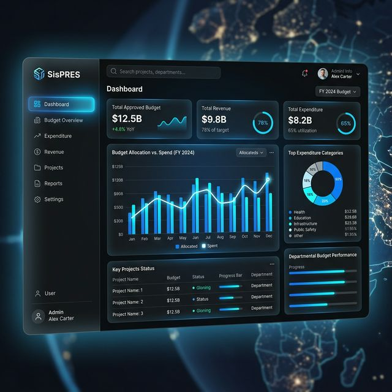
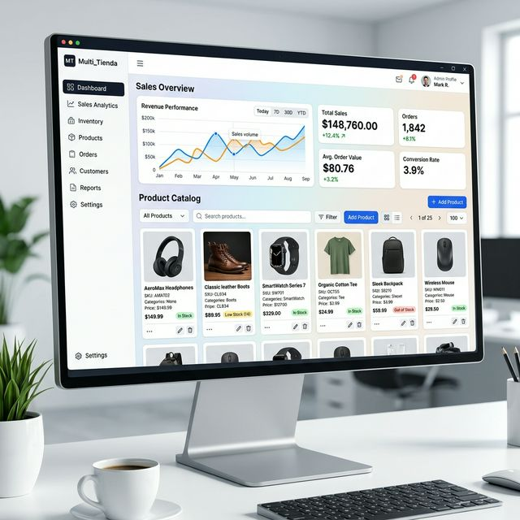

Soluciones integrales de alto impacto técnico y funcional.

Sistema de Presupuesto y Contabilidad Pública bajo normas ONAPRE. Una arquitectura de monolito modular diseñada para la máxima eficiencia gubernamental.

Ecosistema de ventas portable. Una aplicación de escritorio robusta que elimina la dependencia de servidores externos mediante tecnología integrada.
Stack completo de desarrollo — desde la base de datos hasta el dispositivo móvil.
Concebí y desarrollé un ERP especializado en administración pública tras meses de investigación en marcos legales, resolviendo la complejidad técnica de la ejecución presupuestaria estatal en un entorno de alta precisión.
Lideré la migración completa del sistema de gestión de estacionamientos de una arquitectura legacy en PHP monolítico hacia una API moderna en Node.js con MongoDB, mejorando drásticamente la escalabilidad, el rendimiento y la mantenibilidad del sistema en producción.
Concebí, diseñé y desarrollé de forma integral un ecosistema de punto de venta y gestión empresarial orientado a pequeñas y medianas empresas, con un enfoque en portabilidad total: el sistema funciona sin conexión a internet, sin servidores externos y sin instalaciones complejas.
Desarrollé una vitrina digital interactiva para una empresa de personalización de productos, destacando la creación de una herramienta de personalización en tiempo real.
Solución a medida para la visualización centralizada de flujos financieros multiplataforma, facilitando la toma de decisiones basada en saldos consolidados.
Desarrollo de un Marketplace de suscripciones digitales con un flujo de usuario optimizado para la conversión y gestión automatizada de catálogo.
Diseñé y desarrollé desde cero el sistema regulatorio y de gestión de licencias del organismo, cubriendo la totalidad del ciclo de vida de los establecimientos bajo supervisión institucional: centros de apuestas, videolotería, Loto Millón, comercializadoras, operadoras y afines.
Incorporado al proyecto cuando el sistema contaba únicamente con módulos rudimentarios de usuarios, clientes, contratos y gestión de equipos. Diseñé e implementé desde cero la columna vertebral operativa y financiera de la empresa, transformando una aplicación básica en un ERP transaccional completo.